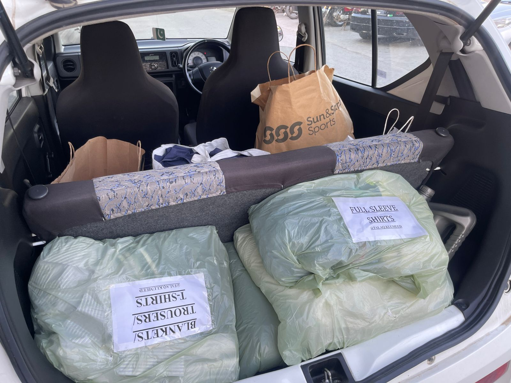

GOV-TECH PLATFORM
Daryaft
A platform focused on aggregating and filtering government-sponsored subsidy programs and schemes across Punjab so citizens can find relevant opportunities without wading through scattered notices. Built with dynamic web architecture, structured filtering, and bilingual program metadata.